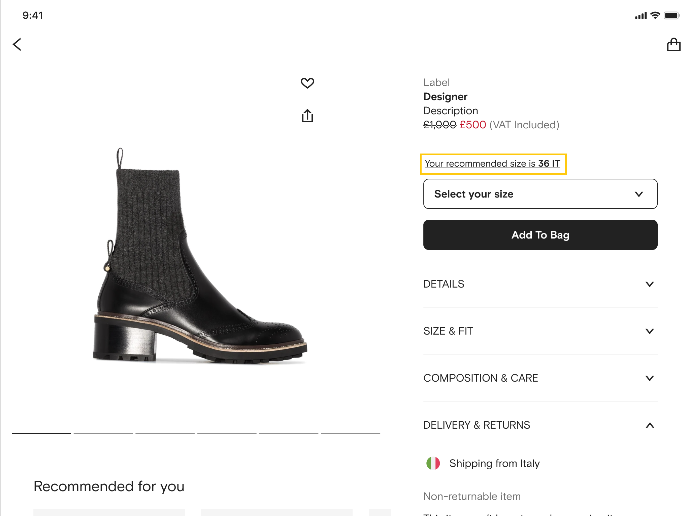
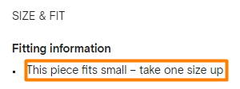

Professional Projects
Welcome to my professional projects portfolio. Here, I'll delve into my background and accomplishments as a data scientist, highlighting my expertise in leveraging data to drive insights and create impactful solutions. With a solid foundation in statistical analysis, machine learning, and data manipulation techniques, I thrive in projects that demand a blend of analytical rigor and creativity. Whether working independently or as part of a team, I am committed to delivering robust and innovative solutions that address complex data challenges.
- All
- Primavera BSS
- Sonae MC
- FARFETCH
Project Overview
The primary objective of this project was to develop a predictive maintenance solution utilizing advanced Machine Learning techniques. Our focus was on predicting the time to failure and the probability of failure within a specified timeframe for industrial assets.
My Role and Contributions
I played a pivotal role in two key teams throughout the project: the Data Engineering team and the Data Science & Machine Learning team. Serving as the primary technical liaison between the Valuekeep product team and the Computer Graphics Centre (CCG) at the University of Minho, I facilitated seamless collaboration and knowledge exchange between the teams.
Data Engineering
Within the Data Engineering team, I was responsible for designing and implementing data capture and storage mechanisms within Azure Data Lake. I developed robust data pipelines for efficient transformation and processing using tools such as Azure Data Factory and Databricks, crucial for handling large volumes of data generated by industrial assets.
Machine Learning and Data Science
In collaboration with the Data Science and Machine Learning team, we conducted comprehensive descriptive, exploratory, and causal analyses of the collected data. Our focus then shifted towards implementing Machine Learning models to achieve two key objectives:
- Prediction of Time to Failure: Approaching this as a regression problem, we aimed to predict the number of time units until the next asset failure. Utilizing advanced algorithms and feature engineering techniques, we developed models capable of providing accurate estimates for proactive maintenance planning.
- Probability of Asset Failure: This aspect was treated as a binary classification problem. By employing various classification algorithms and rigorously evaluating model performance, we successfully estimated the probability of asset failure within predefined time windows. This insight empowered stakeholders to prioritize maintenance tasks and mitigate potential downtime risks effectively.
To execute any ML model, we split the data, with 75% of the records used for training and 25% for testing.
Regression Models:
- Support Vector Machines (SVM) Regressor
- Random Forest Regressor
- K-Nearest Neighbors (K-NN) Regressor
- Gradient Boosting Regressor
- Multi-layer Perceptron (MLP) Regressor
Model performance evaluation was based on the Mean Absolute Error (MAE) metric.
Classification Models
- Support Vector Machines (SVM) Classifier
- Random Forest Classifier
- K-Nearest Neighbors (K-NN) Classifier
- Logistic Regression
- Multi-layer Perceptron (MLP) Classifier
Classification model evaluation utilized the F1 score metric.
Auto ML
In addition to manual model selection and tuning, we explored the Auto ML approach using the H2O tool. The objective was to compare the results obtained from our models with those generated by H2O, which tests various models with diverse configurations.
Outcome
The collaborative efforts between the Valuekeep product team, the CCG, and our teams resulted in the successful development and deployment of a robust predictive maintenance solution. By accurately predicting time to failure and assessing the probability of asset failure, our solution enabled proactive maintenance strategies, significantly reducing unplanned downtime and maintenance costs for our clients.
Skills: Databricks, Python, Pandas, PySpark, scikit learn, xgboost, SQL, Git, Azure Data Factory, AutoML
Project Overview
The objective of this project is to leverage data from the Continente Card, Portugal's largest loyalty program, to support the strategic initiatives of the Marketing, Commercial, and Operational areas. This involves the application of advanced Machine Learning models and statistical methodologies to gain insights and interpret complex relationships within the Continente Card data.
My Role and Contributions
As a Data Scientist specializing in Customer Behavior within the Advanced Analytics and Insight team, my contributions to this project encompass:
- Utilizing supervised and unsupervised Machine Learning models and text extraction techniques to support strategic planning
- Applying advanced statistical methodologies to generate actionable insights
- Adapting techniques to address specific challenges, including handling large volumes of data and streaming modeling
- Automating processes and implementing quality control methodologies for data and model performance
- Building predictive and segmentation models such as RFM segmentation, churn prediction, sentiment analysis, recommendation engines, next best offer, and propensity score models
- Implementing, maintaining, and improving models using various algorithms and techniques
- Leveraging data from multiple sources to enhance regular procedures and actions
- Providing in-depth analytical support for strategic decision-making
Outcome
The collaborative efforts within the Advanced Analytics and Insight team resulted in the successful implementation of various analytical models leveraging Continente Card data. By applying Machine Learning and statistical techniques, we were able to provide actionable insights and support strategic initiatives across Marketing, Commercial, and Operational areas.
Skills: Machine Learning, Statistical Analysis, Data Mining, Predictive Modeling, Segmentation, Text Analysis, Python, R, SQL, Big Data Technologies, Automation, Model Evaluation, Data Quality Control
Project Overview
The primary objective of this project was to develop a predictive model using XGBoost to understand the profitability of leaflet delivery campaigns for parishes. Additionally, an optimization engine was created to automatically generate the delivery list based on budget constraints and prioritization criteria.
My Role and Contributions
I spearheaded the development of the predictive model and optimization engine, working closely with the business team to understand requirements and objectives.
Predictive Model Development
Utilizing XGBoost, I developed a predictive model to estimate the profitability of leaflet delivery campaigns for different parishes. This involved analyzing demographic information and historical campaign data to identify factors influencing campaign success.
Optimization Engine
I designed and implemented an optimization engine that automatically generates the delivery list based on budget constraints(deliver price, paper price...) and prioritization criteria. This involved creating algorithms to maximize campaign effectiveness within resource limitations.
A/B Testing
We conducted A/B tests on similar parishes to validate the effectiveness of the predictive model and optimization engine. This involved comparing campaign outcomes between controlled groups to assess the impact of the implemented strategies.
Streamlit App Development
To facilitate interaction with the predictive model and optimization engine, I developed a Streamlit web application. This allowed the business team to input variables such as weekly parameters, budget constraints, and parish demographics to obtain actionable insights and generate optimized delivery lists.
Outcome
The implementation of the predictive model and optimization engine resulted in improved efficiency and effectiveness of leaflet delivery campaigns. By accurately assessing profitability and automating the delivery list generation process, the solution enabled the business to optimize resource allocation and maximize campaign impact.
Skills: XGBoost, Python, Pandas, Streamlit, A/B Testing, Optimization Algorithms, Data Analysis
Project Overview
TAILOR is the FARFETCH size recommendation engine that provides personalized size recommendations to any user, for any Clothing and Shoe product.
My Role and Contributions
As a Data Scientist, I developed a sequence model employing LSTM, GRUs, and attention models. This led to a substantial increase in top1-accuracy by 22%-45% compared to the previous solution.
I prototyped, evaluated, and deployed new models in production, contributing to the improvement of business processes. These pipelines are responsible for populating the user features and preparing data for training/evaluation models. These jobs run on a scheduled basis.
I designed and analyzed AB tests to measure the effectiveness of new models and features. Additionally, I contributed to the ideation and planning of future projects, aligning them with business objectives and priorities.
Outcome
Our endeavors culminated in the successful deployment of robust size recommendation models tailored for high-end fashion marketplaces. These models exhibit superior accuracy( increase by 22%-45%) and user coverage(increase of 24.5%) compared to existing solutions.
Our model is now integrated into numerous services to enhance personalization across various domains. In recommendation systems, we prioritize suggested products based on the availability of the predicted size for individual users, leveraging a sequence model with attention mechanism for both batch and real-time recommendations. Additionally, in client communications such as back-in-stock notifications, we utilize our size recommendation model to selectively send emails only when the predicted size for the client is replenished in stock.
Skills: Databricks, Azure, Python, Pandas, PySpark, Google Big Query, Apache Airflow, MLOps, Pytorch, LSTM, GRUs, Sequence Models, Transformers, Looker, Docker, SQL, Git, Terraform
Project Overview
As part of my onboarding project at FARFETCH, I spearheaded the TAILOR Fit Advice initiative from inception to production deployment. This project aimed to address the high rate of product returns attributed to size and fit issues by automating the generation of fitting advice for products. Leveraging transactional data and predictive modeling, the project aimed to enhance customer experience and reduce return rates.
My Role and Contributions
Throughout the project lifecycle, I took on a multifaceted role, engaging with various stakeholders and leading the end-to-end execution of the project.
Engagement with Business Team:
I initiated discussions with the business team to understand the pain points and requirements surrounding size and fit-related returns. Through proactive communication and collaboration, I gathered insights to shape the project's objectives and scope.
Data Analysis and Model Development:
With a hands-on approach, I conducted comprehensive data analysis, delving into transactional data to identify patterns and trends related to size and fit issues. Leveraging my expertise in statistical analysis and machine learning, I developed predictive models to assess the likelihood of products having size issues, running smaller, or running larger.
Production Deployment:
Driven by a commitment to excellence, I led the seamless transition of the developed models into production systems. Utilizing my skills in Databricks and Apache Airflow, I orchestrated the creation of data pipelines and automation workflows, ensuring the timely delivery of fitting advice to customers.
Outcome
The successful delivery of the TAILOR Fit Advice project marked a significant milestone, demonstrating the impact of my single-handed efforts in addressing size and fit-related challenges. Through meticulous data analysis and robust model development, the project led to tangible reductions in return rates across both men's and women's shoes categories.
Specifically, the implementation of TAILOR Fit Advice resulted in a 7% reduction in return rates for men's shoes and a 3.5% reduction for women's shoes. These reductions signify the effectiveness of the developed models in providing accurate fitting advice to customers, thereby enhancing customer satisfaction and operational efficiency.
Moreover, the seamless integration of Databricks and Apache Airflow for production deployment streamlined operations, enabling real-time recommendations to customers and further contributing to the overall success of the project.
Skills: Data Analysis, Predictive Modeling, Statistical Analysis, Bayesian Models, Python, SQL, PySpark, scipy, scikit learn, Looker, Databricks, Apache Airflow